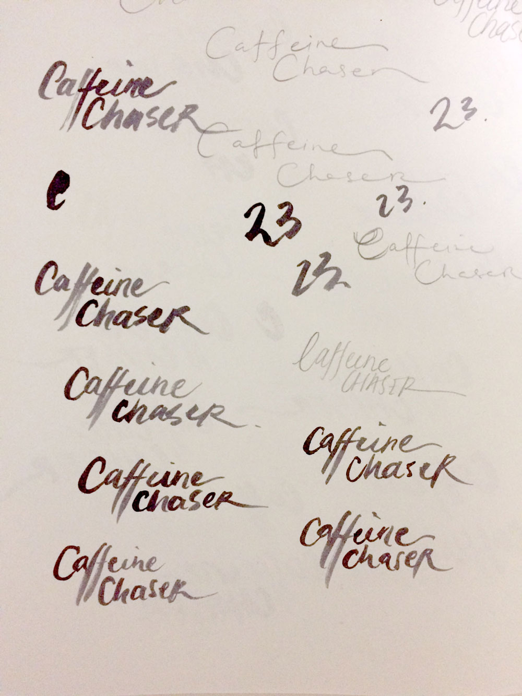
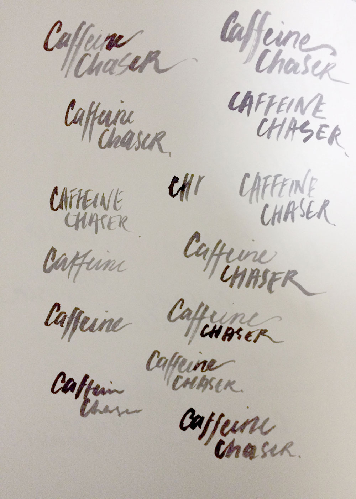
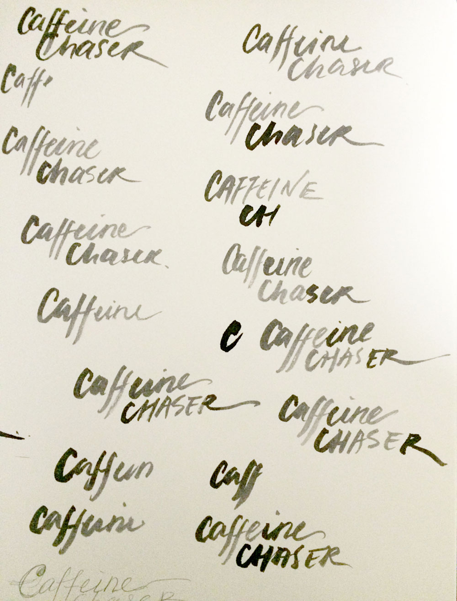
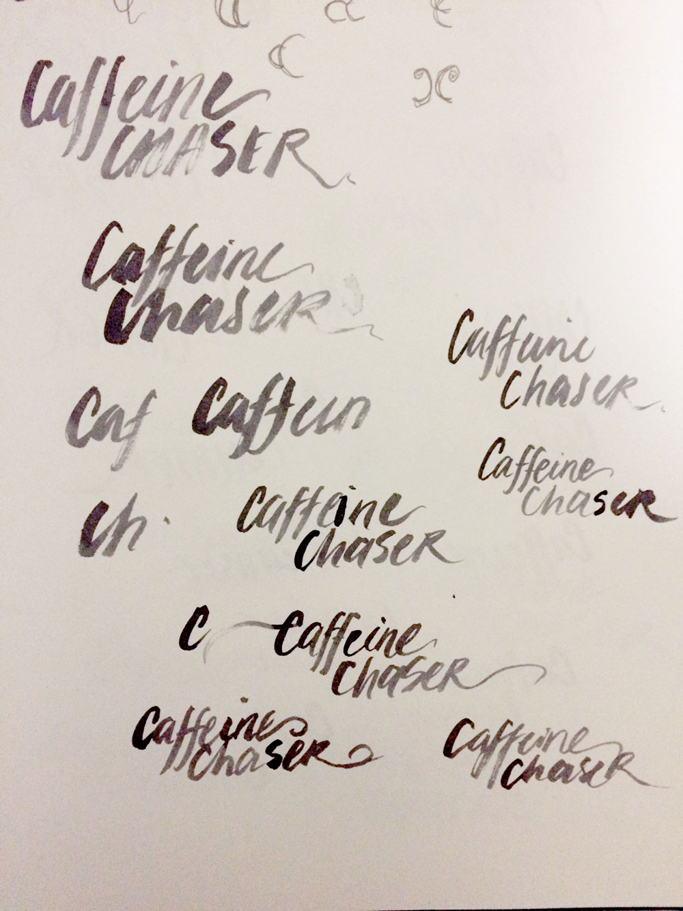
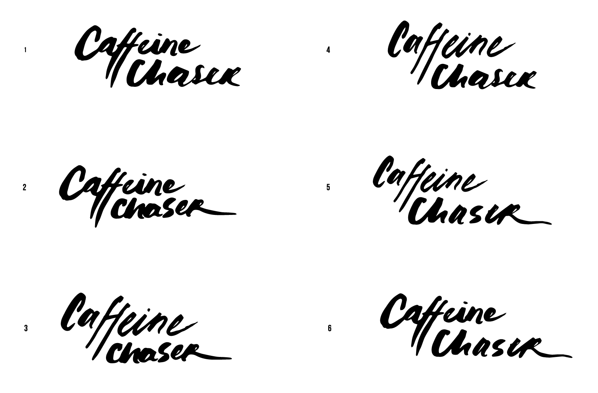
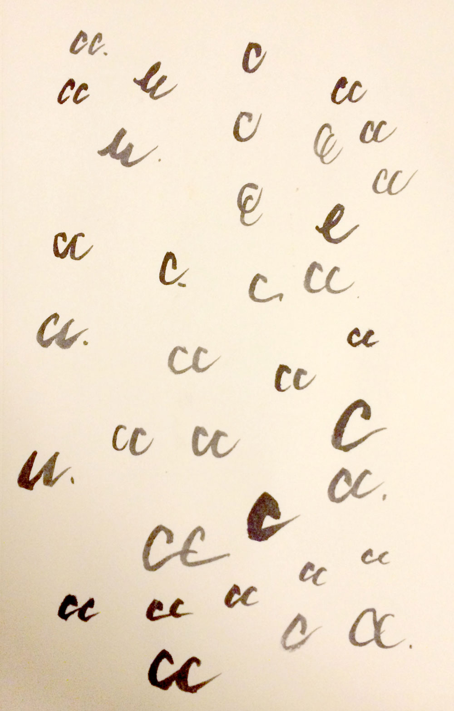
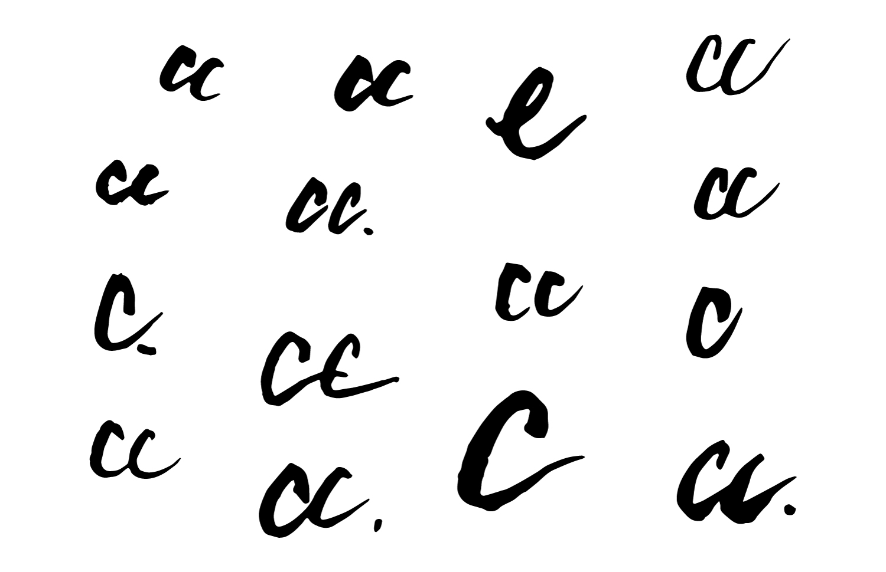
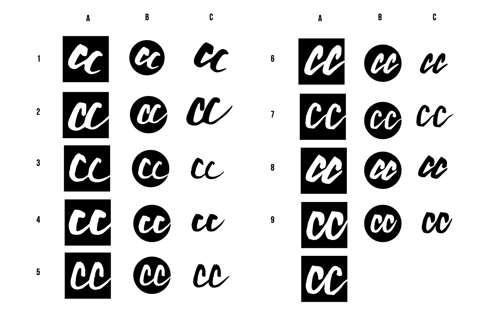

Caffeine Chaser
For this freelance project, I created a hand-lettered logotype for Caffeine Chaser, a photo portfolio that profiles interesting people and places. The client wanted something hand-lettered but modern, classic, and not too feminine.sketches & vectors
I started by sketching and playing around with brushes and black ink, rewriting the letters and words a hundred different ways, trying out different things and see what could work.





I then vectorized everything and mixed and matched different parts of what I created. I also tried editing the letter forms on the computer, but found that doing so made the lines too smooth. I found I liked the original roughness of the brush stroke edges. I combined the vector pieces in different ways, and presented these final options to the client. We both decided to go with option #5 because it had a nice fluid elegance.
favicon
I went through the same process for the favicon.



After mixing and matching different C's, I found that using identical C's created a more impactful and strong icon than using two different C's. The client and I both gravitated towards option #4 because of its simple compact roundness and heaviness.